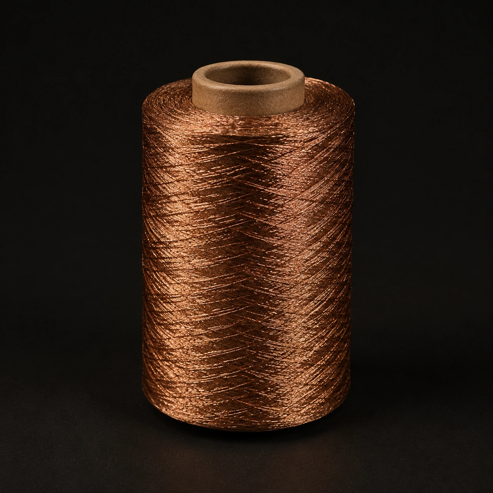
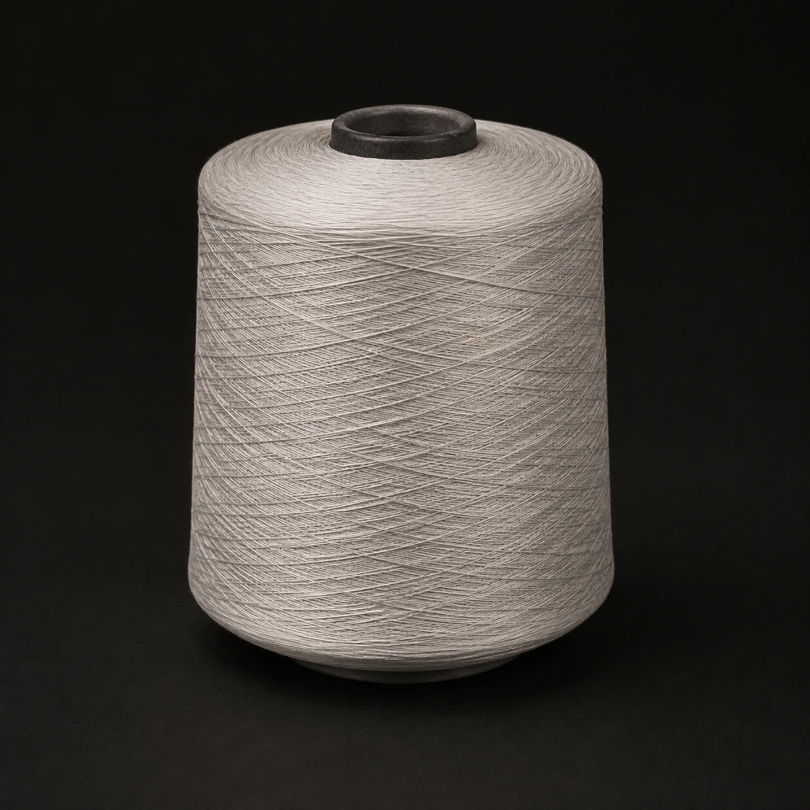
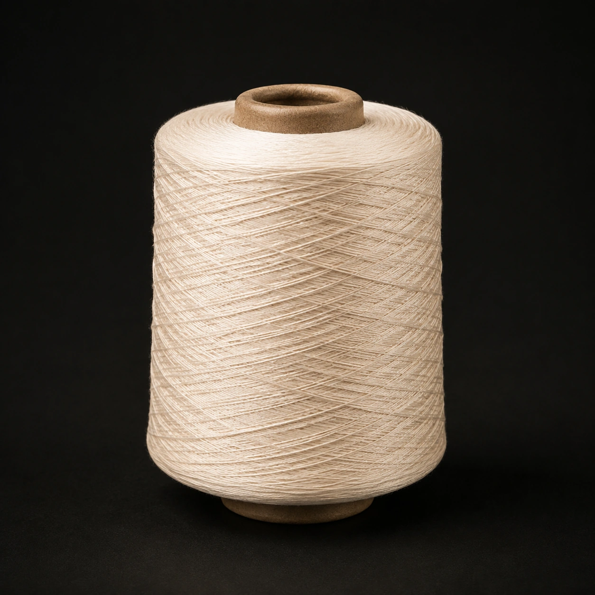
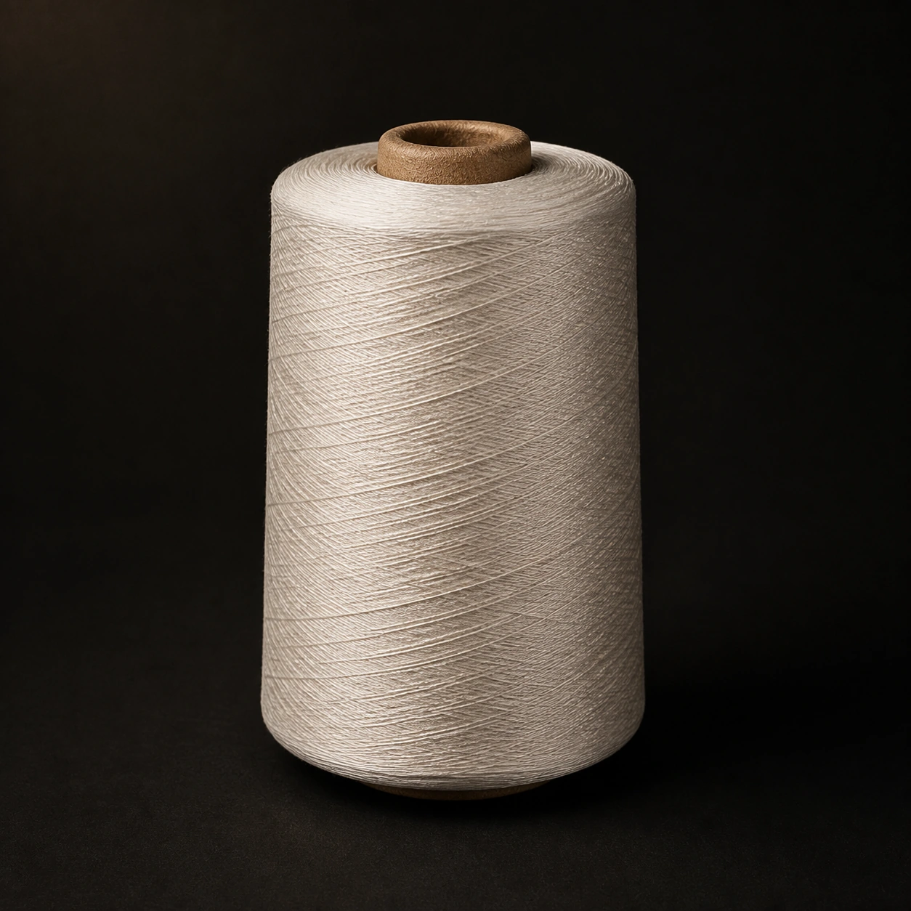
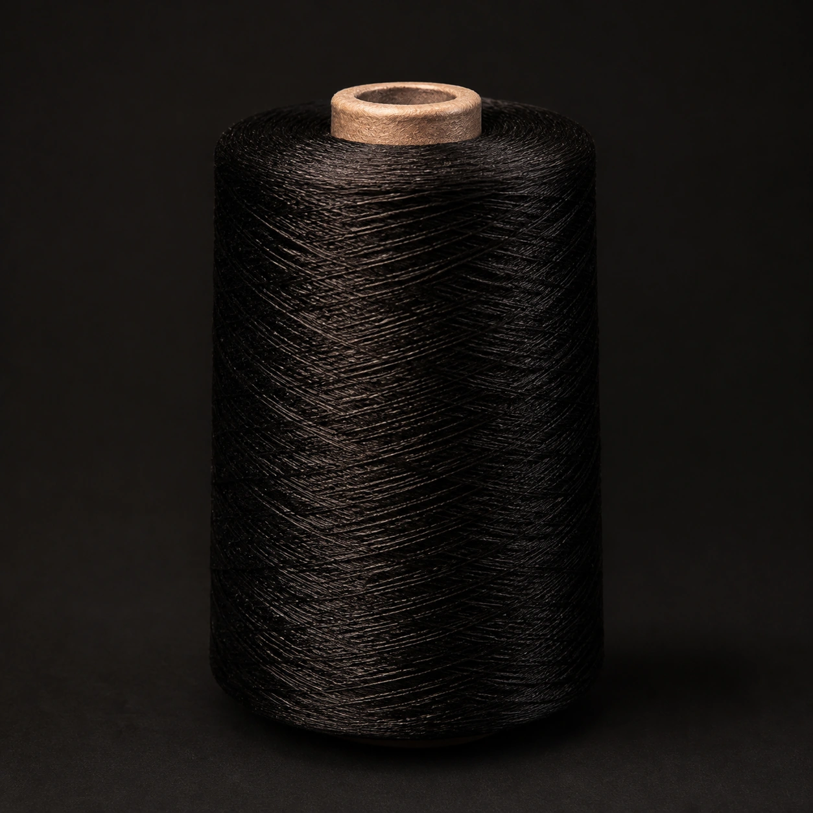
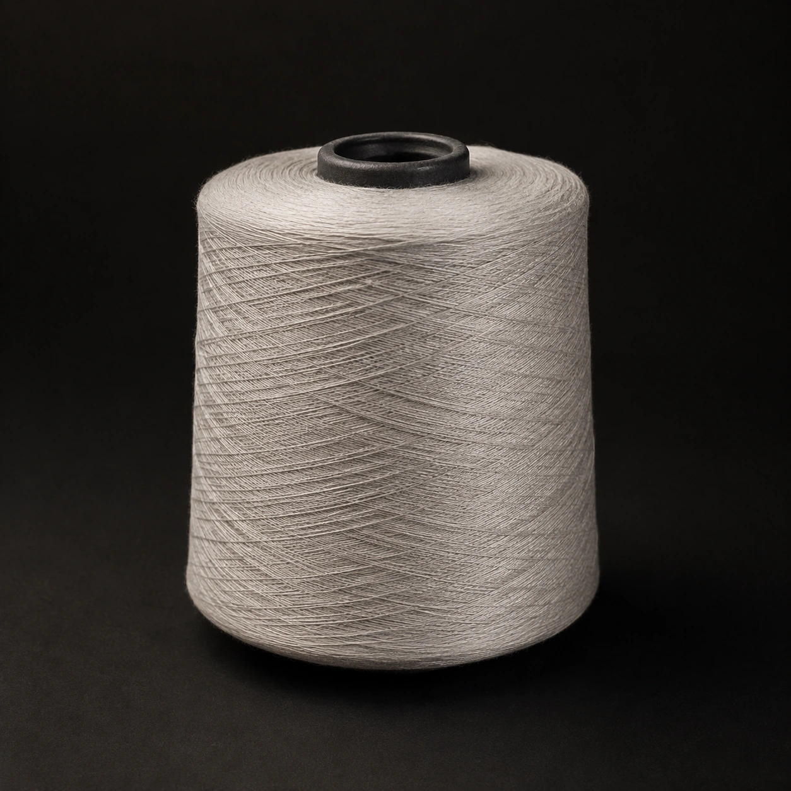
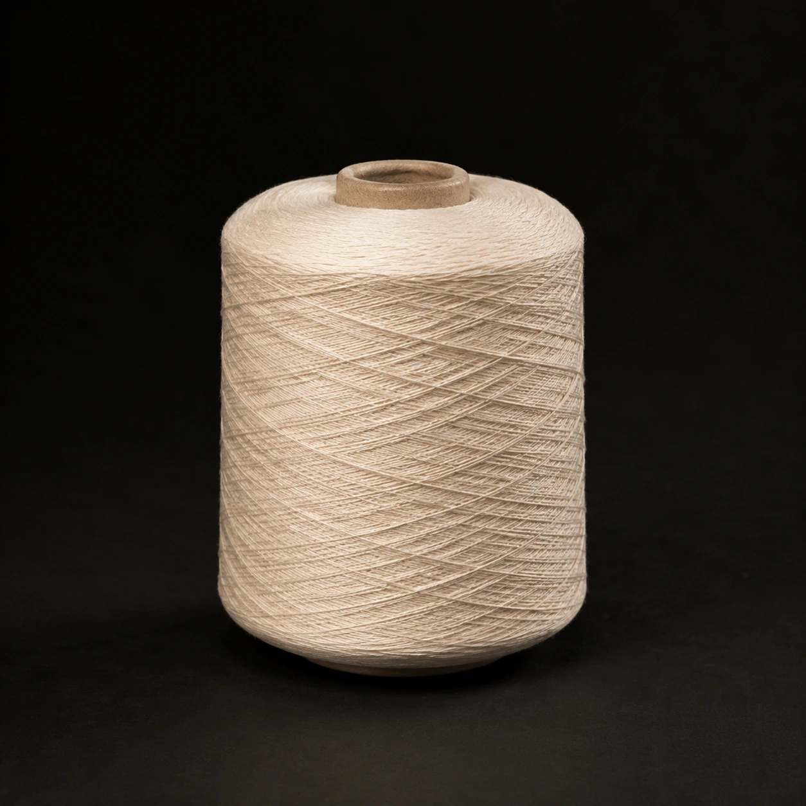

نخ لمه و متالیک
نخهای براق و متالیک برای ایجاد جلوهای درخشان در پارچه، بافتهای تزئینی و گلدوزی.
FARAZI COLLECTION
مجموعه نخهای طبیعی و مصنوعی برای نیازهای مختلف صنعت نساجی.

نخهای براق و متالیک برای ایجاد جلوهای درخشان در پارچه، بافتهای تزئینی و گلدوزی.

ترکیبی از ویژگیهای پلی استر و ویسکوز، مناسب برای تولید پارچههای پوشاک و مصارف نساجی.

نخ ویسکوز با لطافت و جلوهای ابریشمی، مناسب برای بافت پارچههای نرم و خوشافت.

نخ پلی استر برای کاربردهای متنوع بافندگی، تولید پوشاک و منسوجات.

نخ با الیاف پیوسته و ساختار یکنواخت، مناسب برای تولید انواع پارچه و منسوجات.

نخ ریسیدهشده برای مصارف متنوع نساجی و تولید پارچههای بافتهشده و کشباف.

نخ پنبه با منشأ طبیعی و بافتی لطیف، مناسب برای تولید پوشاک و منسوجات روزمره.
نخ پنبه با منشأ طبیعی و بافتی لطیف، مناسب برای تولید پوشاک و منسوجات روزمره.
نخ پنبه با منشأ طبیعی و بافتی لطیف، مناسب برای تولید پوشاک و منسوجات روزمره.
نخ پنبه با منشأ طبیعی و بافتی لطیف، مناسب برای تولید پوشاک و منسوجات روزمره.
نخ پنبه با منشأ طبیعی و بافتی لطیف، مناسب برای تولید پوشاک و منسوجات روزمره.
نخ پنبه با منشأ طبیعی و بافتی لطیف، مناسب برای تولید پوشاک و منسوجات روزمره.
نخ پنبه با منشأ طبیعی و بافتی لطیف، مناسب برای تولید پوشاک و منسوجات روزمره.
هنوز محصولی ثبت نشده است.